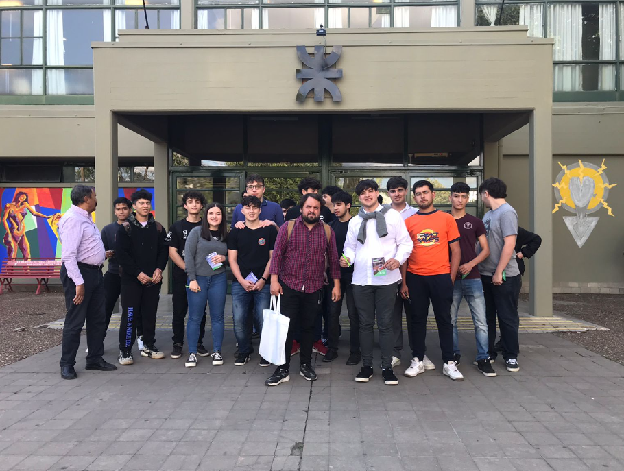
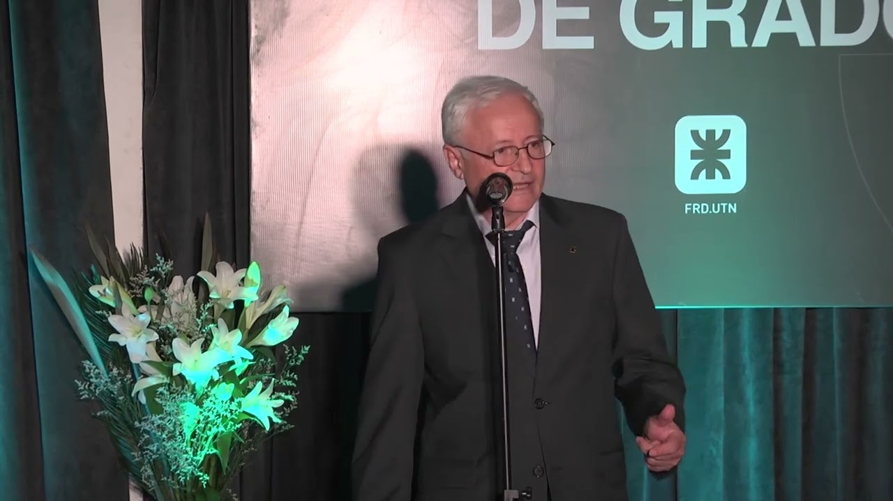
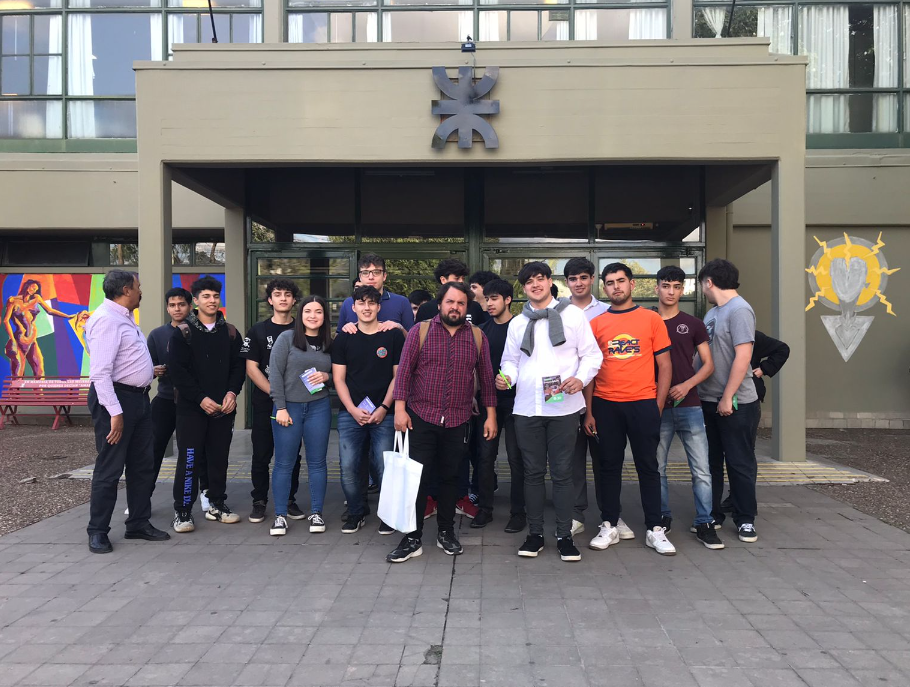
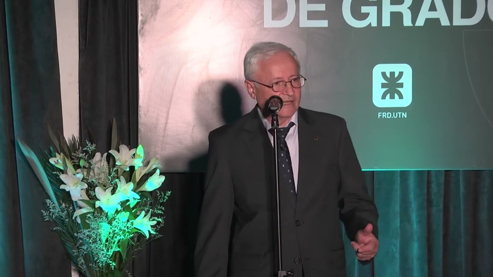
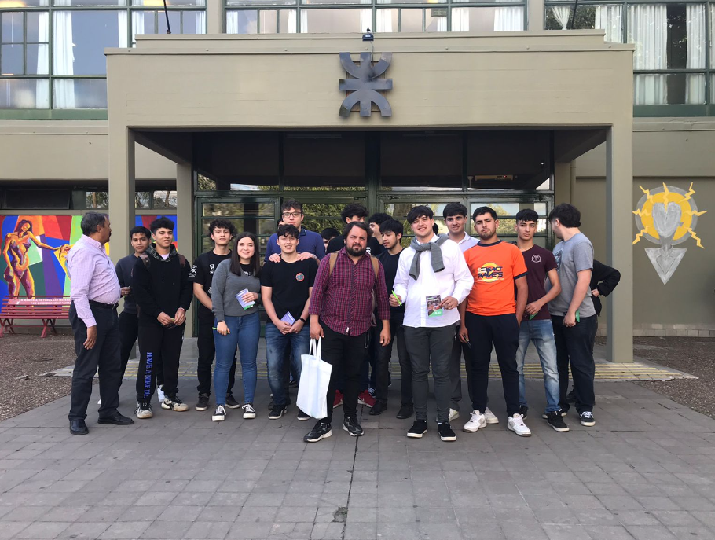
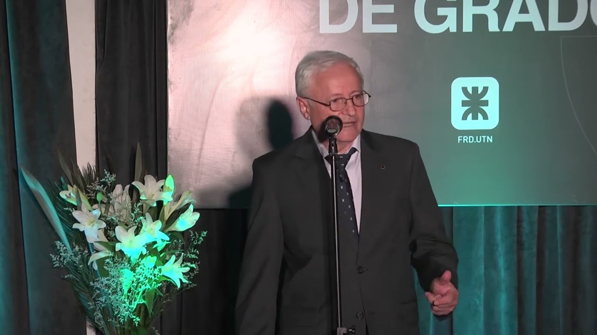

Esta página se crea a modo de ejemplo para cumplir con los puntos del TP N° 3 de la Materia "Programación III" de la Tecnicatura Universitaria en Programación (UTN-FRD).
Imágenes de Muestra


iFrame con la Ubicación de la FRD
La facultad Regional Delta se ubica en la Ciudad de Campana, en la calle San Martín 1171, entre las calles Liniers y Andrés del Pino.
 


